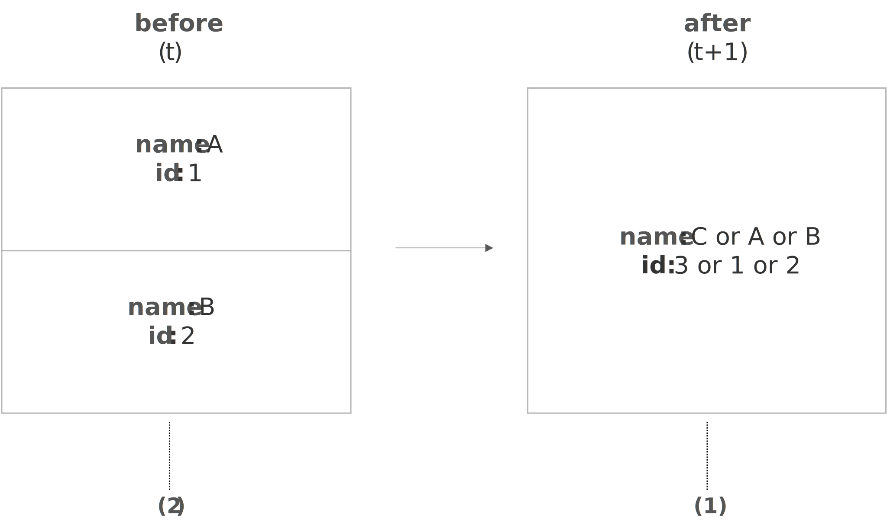
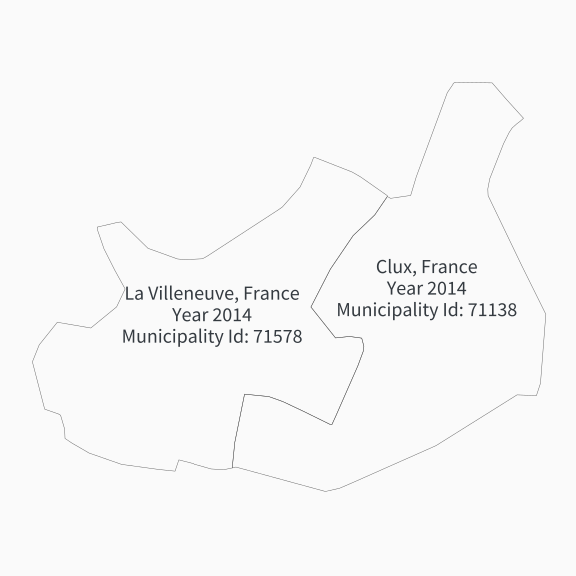
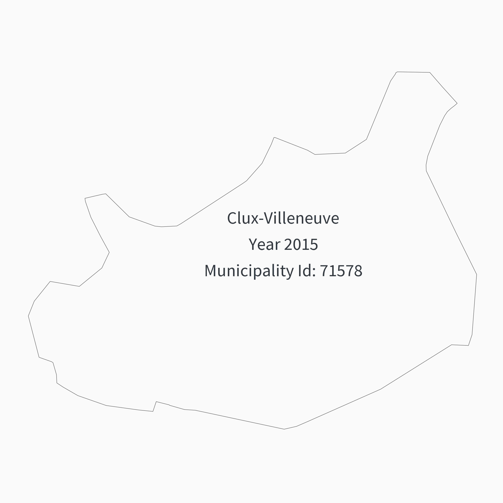
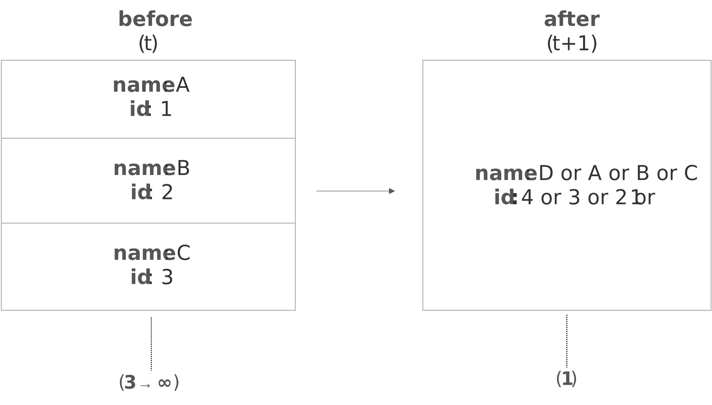

Make this Notebook Trusted to load map: File -> Trust Notebook
Merger
Simple Merger
Definition
The creation of a new municipality whose territory results from the union of two pre-existing municipalities.
Implication of the change
Before (year t):
- Municipalities A (with id 11) and B (with id 2) exist as separate entities, each with its own name, code, and territory.
After (year t + 1):
- Municipalities A and B were dissolved.
- Municipality C was created, covering the combined territory of Municipalities A and B.
- Municipality C either carries forward one predecessor’s name/id or receives a new name/id.
Visual overview
Simple Merger

The number of municipal units involved is indicated in brackets under each description.
Examples
Based on our cross-country analysis, we identified several configurations in how newly formed municipalities—created through simple mergers—are assigned names and ids. Specifically, we observed four common combinations: (a) a new name with an inherited id, (b) an inherited name with an inherited id, (c) an inherited name with a new id, and (d) a new name with a new id. Below we present illustrative examples from different EU countries for each case.
a. New name with an inherited id
The case occured in 2015 and it was noticeable in 2016.
The new municipality (Commune in France) Val de Lambronne (id 11080) was created through the merger of the municipalities Caudeval (id 11080) and Gueytes-et-Labastide (id 11171). The name Val de Lambronne is new, and the id was inherited from the municipality of Caudeval. The case was registered in the metadata dataset under the id: fr-m-34-2015-2016.
b.Inherited name and id
The case took place in 2014 and it was noticeable in 2015.
The new municipality (Commune in Luxembourg) Wiltz (id 0807) was created through the merger of the municipalities Wiltz (id 0807) and Eschweiler (id 0803). Both the name and id were inherited from the former Wiltz municipality. The case was registered in the metadata dataset under the id: fr-m-34-2015-2016.
In some case, the inherited name of a new municipality formed after a merger sometimes consists of a combination of the names of the municipalities involved, separated by a hyphen. For example, the municipality (Commune in France) Clux-Villeneuve (id 71138) was created through the merger of the municipalities Clux (id 71138) and La Villeneuve (id 71578). The name is new—formed by combining the names of the merged entities—while the id was inherited from Clux (Case id: fr-m-10-2014-2015). Similarly, the municipality (Commune in Luxembourg) Rosport-Mompach (id 1006) was created through the merger of the municipalities Rosport (id 1007) and Mompach (id 1006). The name combines the names of both former municipalities, and the id was inherited from Mompach. Case id: lu-m-4-2017-2018
c.Inherited name with a new id
The case took place in 2017 and it was noticeable in 2018.
The new municipality (Kommune in Norway) Larvik (id 0712) was created through the merger of the municipalities Larvik (id 0709) and Lardal (id 0728). The name Larvik is inherited from the former Larvik municipality, and the id 0712 was new . The case was registered in the metadata dataset under the id: no-m-2-2017-2018
d. New name with a new id
The case occured in 2075 and it was noticeable in 2018.
The new municipality (Kommune in Norway) Indre Fosen (id 5054) was created through the merger of the municipalities Leksvik (id 1718) and Rissa (id 1624). Both the name and the id are new (source).Case id: no-m-6-2017-2018
Map Plots
The visual example is based on the Norwegian case: d. New name with a new id
Before

After

How it is recorded in the data system
Multiple Merger
Definition
The creation of a new municipality whose territory results from the union of more than two pre-existing municipalities.
Implication of te change
Before (year t):
- Municipalities A (with id 1), B (with id 2), and C (with id 3) exist as separate entities, each with its own name, id, and territory.
After (year t + 1):
- Municipalities A, B, and C were dissolved.
- Municipality D was created, covering the combined territory of Municipalities A, B, and C.
- Municipality D either carries forward one predecessor’s name/id or receives a new name/id.
Visual overview
Multiple Merger

The number of municipal units involved is indicated in brackets under each description.
Examples
Based on our cross-country analysis, we identified several configurations in how newly formed municipalities—created through simple mergers—are assigned names and ids. Specifically, we observed four common combinations: (a) a new name with an inherited id, (b) an inherited name with an inherited id, (c) an inherited name with a new id, and (d) a new name with a new id. Below we present illustrative examples from different EU countries for each case.
a. New name with an inherited id
The case occured in 2016 and it was noticeable in 2017.
The new municipality (Commune in France) Les Trois Châteaux (id 39378) was created through the merger of the municipalities L’Aubépin (id 39023), Chazelles (id 39135), and Nanc-lès-Saint-Amour (id 39378). The name is new, while the id was inherited from Nanc-lès-Saint-Amour . The case was registered in the metadata dataset under the id: fr-m-430-2016-2017.
b.Inherited name and id
The case took place in 2014 and it was noticeable in 2015.
The new municipality (Gemeinde in Germany) Friedland (id 130715152035) was created through the merger of the municipalities Eichhorst (id 130715152031), Glienke (id 130715152040) and Friedland (id 130715152035). Both the name and id were inherited from the former Friedland municipality. The case was registered in the metadata dataset under the id: de-m-10-2014-2015
c.Inherited name with a new id
The case took place in 2014 and it was noticeable in 2015.
The new municipality (Gemeinde in Austria) Bad Mitterndorf (id 61255) was created through the merger of the municipalities Bad Mitterndorf (id 61226), Pichl-Kainisch (id 61233), and Tauplitz (id 61245). The name was inherited from Bad Mitterndorf, while the id is new. The case was registered in the metadata dataset under the id: at-m-33-2014-2015
d. New name with a new id
The case occured in 2018 and it was noticeable in 2019.
The new municipality (Gemeente in Belgium) Lievegem (id 44085) was created through the merger of the municipalities Waarschoot (id 44072), Lovendegem (id 44036), and Zomergem (id 44080). Both the name and the id are new. The case was registered in the metadata dataset under the id:: be-m-4-2018-2019
Map Plots
How it is recorded in the data system
References
By id we mean code identifier of the municipality.↩︎